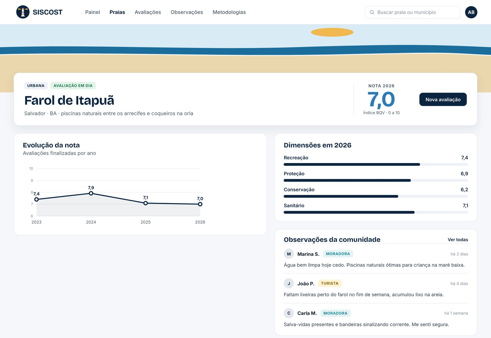
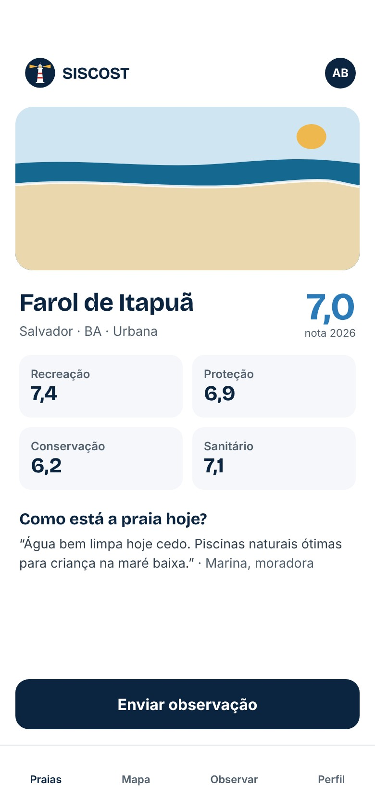
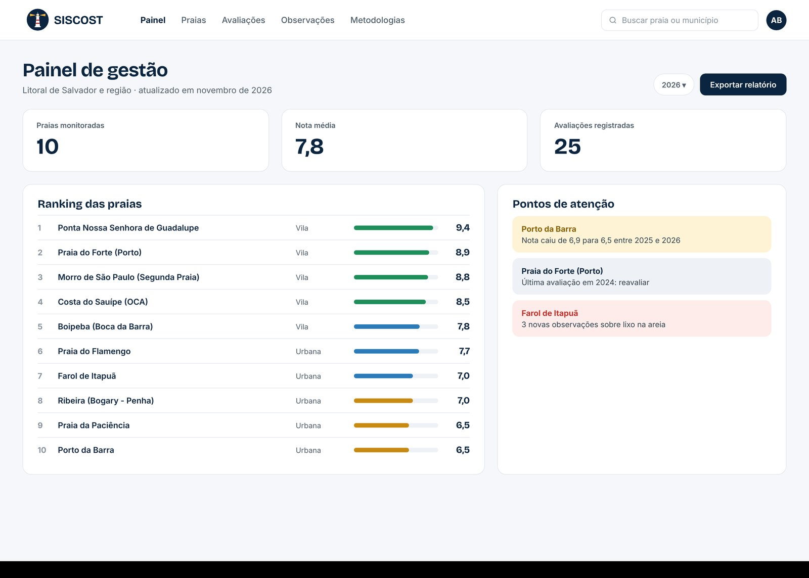

Sistema Inteligente para Ambientes Costeiros
A qualidade de cada praia, medida com ciência e aberta a todos.
O SISCOST reúne avaliações técnicas e observações de moradores e turistas para gerar um índice de qualidade confiável, ajudar a gestão pública a decidir e manter a população informada.


Fontes: MMA (2021); IBGE, Municípios defrontantes com o mar (2021); IBGE, Censo 2022.
Como funciona
Da avaliação em campo ao painel de quem decide.
Avalia
Pesquisadores respondem um questionário científico padronizado, direto no aplicativo ou no site.
Calcula
O sistema gera automaticamente a nota de qualidade de cada praia, ano a ano, de 0 a 10.
Informa
Gestores públicos acompanham painéis, rankings, alertas e a evolução das suas praias.
Escuta
Moradores e turistas consultam as praias e enviam observações. Os dados ficam abertos à população.
Metodologia
Ciência no centro da nota.
O SISCOST usa o índice BQV (Beach Quality Value), metodologia científica de avaliação de praias publicada em 2024 e aplicada pela rede ibero-americana Ranking Mejores Playas. Cada tipo de praia tem pesos próprios, e cada avaliação conta de acordo com a credibilidade de quem avaliou.
Para gestores públicos
Decisões sobre o litoral com dados, não com achismo.
- Nota de qualidade e ranking de todas as praias do município.
- Evolução histórica e comparação entre períodos.
- Pontos de atenção a partir das observações da população.
- Relatórios prontos para prestação de contas.

Para moradores e turistas
Saiba como está a praia antes de sair de casa.
Consulte a nota de qualidade, veja o que outras pessoas relataram e conte o que você encontrou: água, limpeza, segurança, acesso. Você se identifica como morador ou turista, e a sua observação chega a quem cuida da praia.
Vamos cuidar do seu litoral juntos?
Prefeituras, secretarias, órgãos ambientais, universidades e empresas de turismo: conte o que vocês precisam e mostramos o SISCOST funcionando com as praias da sua região.